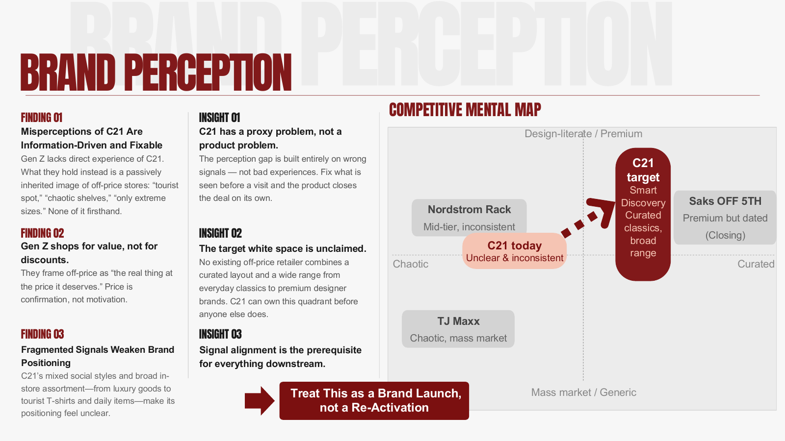
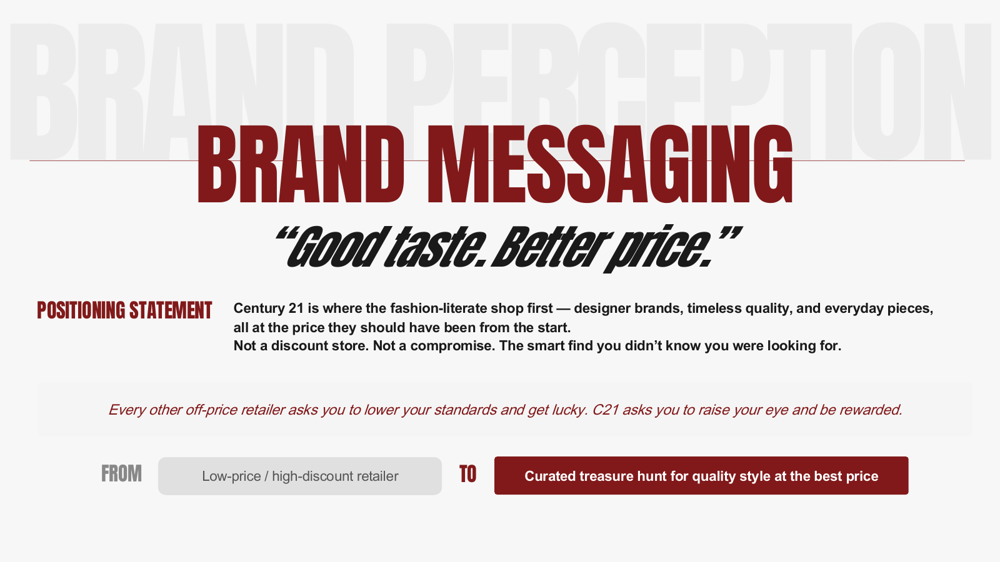
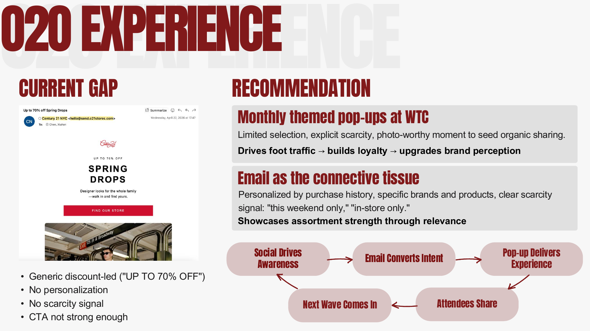

Situation
Gen Z impressions of Century 21 were shaped by outdated secondhand signals rather than store visits.
Task
As a core researcher, turn consumer insight into a brand-introduction and store-visit strategy.
Action
Used 8 in-depth interviews and 7 focus groups to identify the perception gap; developed a style-first, price-second KOL brief, UGC activation, and GEO/AEO and O2O recommendations.
Result
Delivered the “Good taste. Better price.” positioning and a plan linking awareness, creator content, and store visits. This was a research deliverable; store-traffic uplift was not measured.



